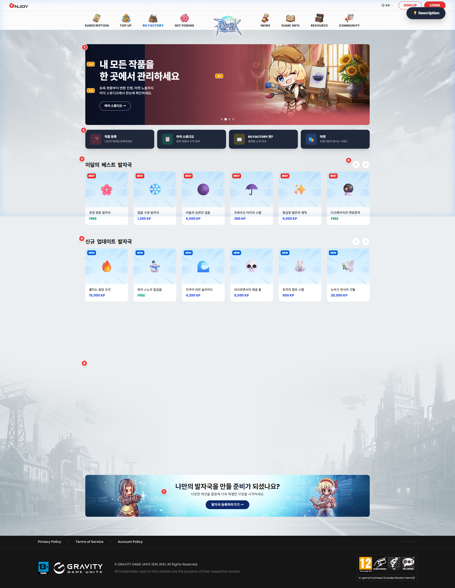
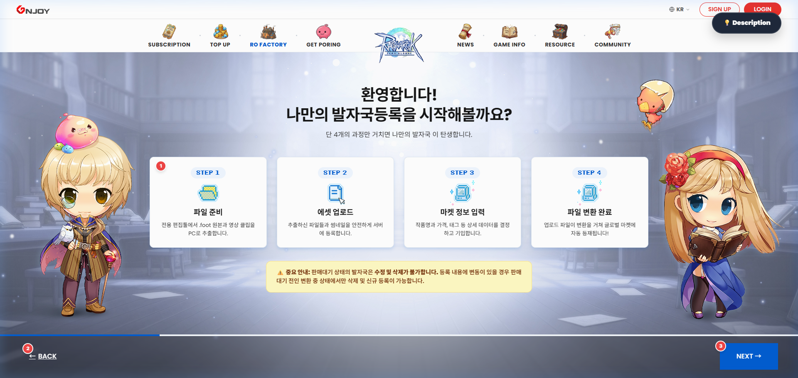
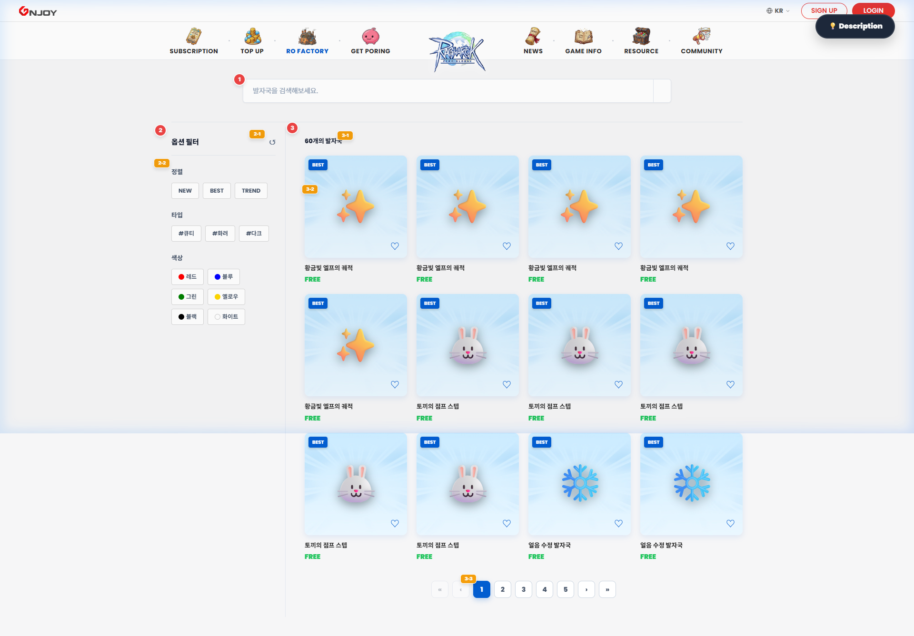
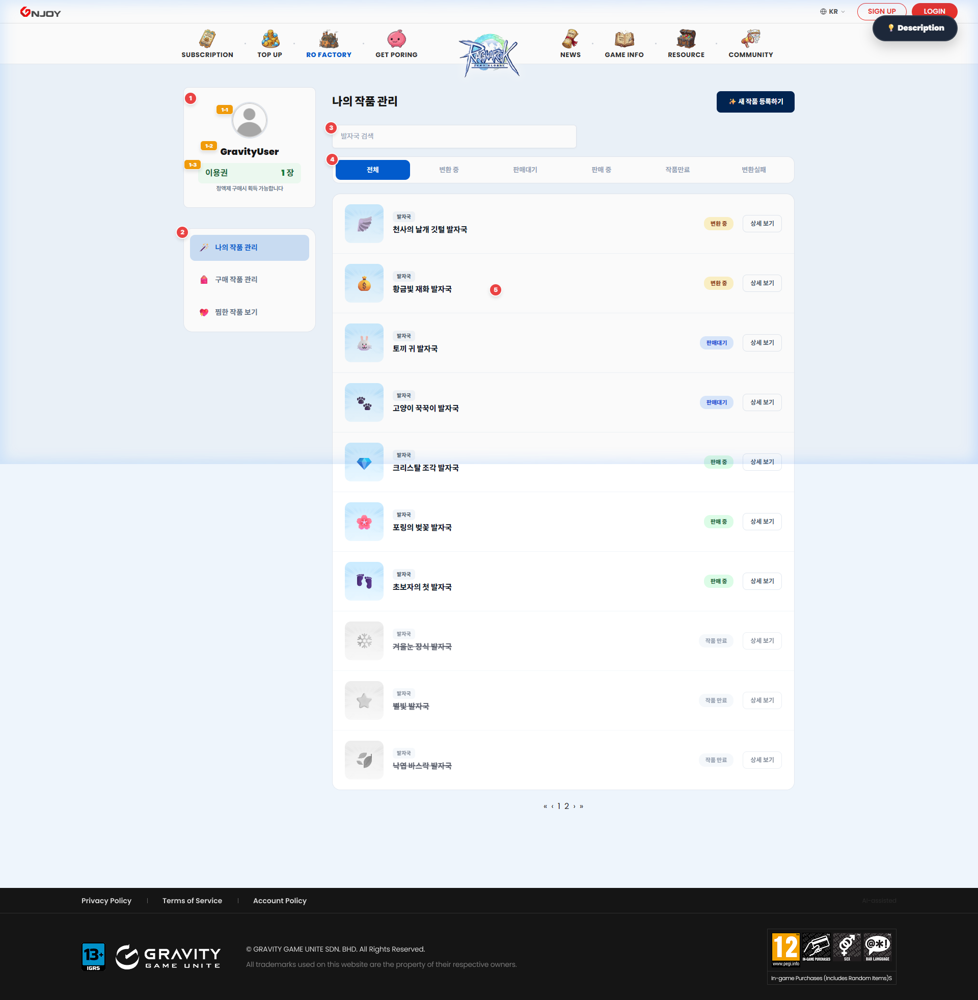
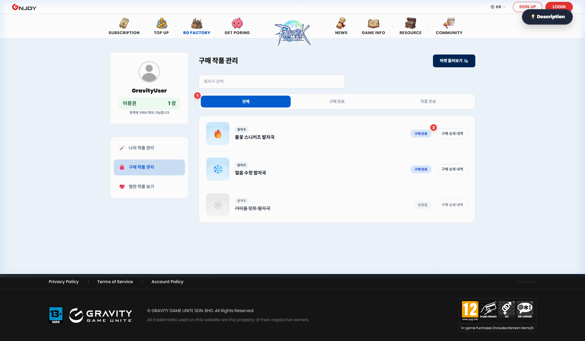
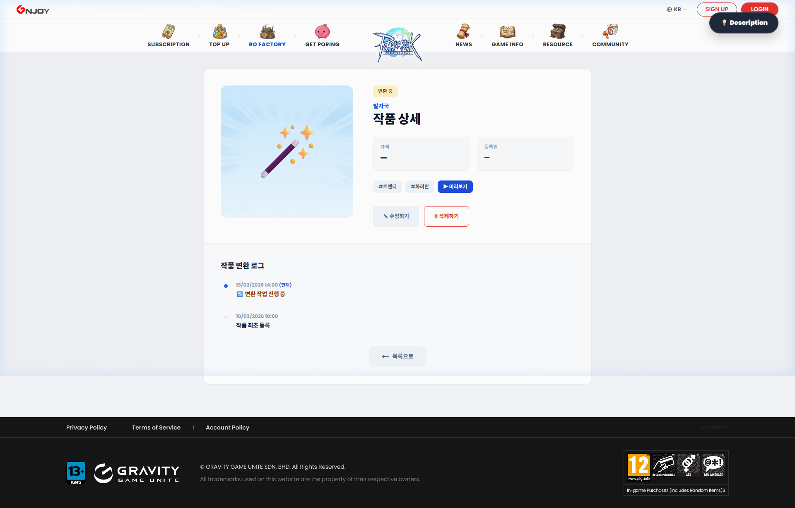
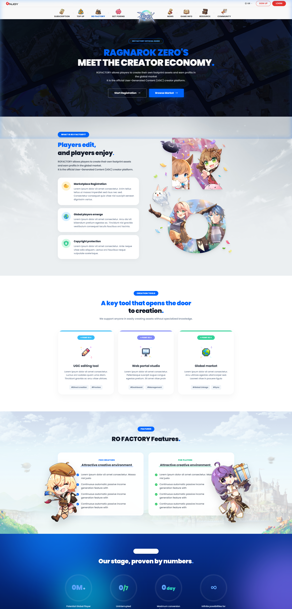
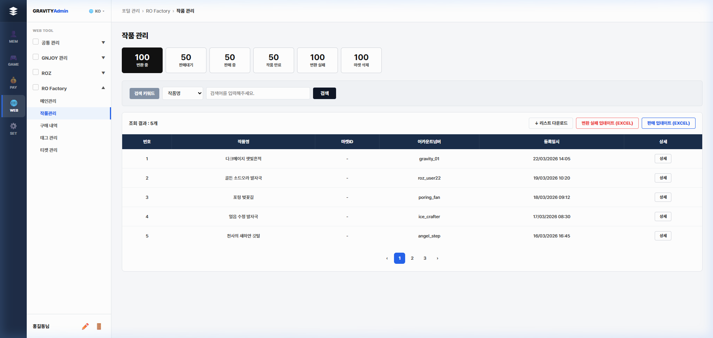

1. 서비스 개요
RO Factory는 라그나로크 제로(ROZ) 게임 내에서 사용되는 UGC(User Generated Content) 에셋 — "발자국"을 유저가 직접 제작하고, 마켓에서 사고팔 수 있는 글로벌 크리에이터 마켓플레이스입니다.
유저 핵심 사이클
편집툴 다운로드 → 에셋 제작(.foot/영상/썸네일) → 작품 등록(파일 업로드 + 메타데이터 입력) → 변환 대기 → 변환 진행 → 변환 완료 → 마켓 판매 → 구매자 검색·구매 → 인벤토리 보관
※ 변환 진행 중 실패 시 → 변환 실패 (가이드 참조)
관리자 핵심 사이클
작품 관리(상태별 조회·검색) → 변환 실패 처리(Excel 업로드) / 판매 업데이트(Excel 업로드) / 마켓 삭제 처리
그 외 운영: 배너 관리 · 태그 관리 · 구매 내역 조회 · 티켓 관리
| 구분 | 설명 |
|---|
| 발자국 (Footprint) | 게임 캐릭터가 이동할 때 남기는 시각 이펙트 에셋 |
| KP (Key Point) | RO Factory 전용 포인트 (화폐) |
| UGC 편집툴 | 발자국 에셋을 제작하는 데스크톱 전용 소프트웨어 |
| .foot 파일 | 편집툴에서 출력한 발자국 원본 소스 파일 |
2. 접속 방법 및 환경
| 환경 | URL |
|---|
| Front (유저 서비스) | main2.html 또는 포털 index.html → "Front 통합 메인 포털" 클릭 |
| Admin (백오피스) | admin.html 또는 포털 index.html → "Admin 운영 관리" 클릭 |
- PC 브라우저: Chrome, Edge, Safari (최신 버전 권장)
- 모바일: 반응형 지원 (단, 작품 등록은 PC 전용)
- 언어: 한국어(KO) / 영어(EN) 전환 지원
⚠️ IMPORTANT
작품 등록 페이지는 PC 환경에서만 접근 가능합니다. 모바일에서 접근 시 안내 메시지가 표시됩니다.
3. Front (유저) 서비스
3.1 메인 홈페이지
파일: main2.html

📸 메인 홈페이지 스크린샷
'" alt="메인 홈페이지">
RO Factory에 진입하면 가장 먼저 보이는 포털 허브 페이지입니다.
GNB (글로벌 네비게이션 바)
| 영역 | 구성 |
|---|
| 상단 바 (GNJOY) | GNJOY 로고 · 언어 전환(EN/KR) · Sign Up · Login |
| 메인 바 (ROZ) | 좌측 메뉴 4개 · 중앙 ROZ 로고 · 우측 메뉴 4개 |
- RO FACTORY 메뉴에 마우스를 올리면 드롭다운 서브메뉴: Register, Market, My Studio, RO FACTORY?
히어로 슬라이더
- 4개의 슬라이드가 자동으로 롤링
- 하단 퀵 메뉴 카드(4개)를 통해 주요 페이지로 빠르게 이동
- 모바일에서는 퀵 메뉴 대신 도트 네비게이션 표시
| 슬라이드 | 내용 | 이동 페이지 |
|---|
| 1 | 나만의 발자국을 만들고 등록하세요 | register.html |
| 2 | 내 모든 작품을 한 곳에서 관리하세요 | studio_myworks.html |
| 3 | RO FACTORY는 무엇인가요? | about.html |
| 4 | 전 세계 크리에이터의 발자국을 만나보세요 | market.html |
인기 작품 / 신규 업데이트 슬라이더
- 이달의 베스트 발자국: BEST 배지가 붙은 인기 상품 카드 슬라이더
- 신규 업데이트 발자국: NEW 배지가 붙은 최신 등록 상품 카드 슬라이더
HOW IT WORKS (제작 가이드)
| 단계 | 내용 |
|---|
| STEP 1 | UGC 편집툴로 .foot 원본 파일과 영상 미리보기 파일 추출 |
| STEP 2 | 파일 업로드 및 메타 데이터(가격, 태그 등) 입력 |
| STEP 3 | 등록 완료 후 마이 스튜디오에서 변환 현황 확인 |
3.2 작품 등록 (Register)
파일: register.html

📸 작품 등록 페이지 스크린샷
'" alt="작품 등록">
유저가 데스크톱 편집툴에서 제작한 발자국 에셋을 마켓에 등록하는 4단계 위자드(Wizard) 페이지입니다.
⚠️ IMPORTANT
- PC 전용: 모바일 접속 시 PC 접근 안내가 표시됩니다
- 로그인 필수: 비로그인 상태에서는 접근 불가
- 주간 등록 제한: 최대 100개/주 (UTC+0 기준 월~일)
STEP 1 — 편집툴 안내
- UGC 편집툴 다운로드 버튼 제공
- 편집툴 사용 가이드 안내
STEP 2 — 파일 업로드
| 업로드 항목 | 형식 | 필수 여부 |
|---|
| 원본 파일 | .foot | ✅ 필수 |
| 미리보기 영상 | .mp4 | ✅ 필수 |
| 썸네일 이미지 | .png | ✅ 필수 |
⚠️ WARNING
약관 동의 체크 없이는 다음 단계로 진행할 수 없습니다.
STEP 3 — 메타 데이터 입력
| 입력 항목 | 설명 | 유효성 검사 |
|---|
| 작품명 | 마켓에 표시될 이름 | 필수 입력 |
| 마켓 가격 | KP 단위 (0 이상의 정수) | 최소 0 KP, 음수 불가 |
| 게시 만료일 | 마켓 노출 종료 날짜 | 최소 30일 이상 |
| 태그 선택 | 속성 태그 (예: Dark, Cool, Cute 등) | 최대 2개까지 선택 가능 |
| 메인 색상 | 대표 색상 1개 선택 | 라디오 버튼(단일 선택) |
💡 TIP
태그 큐(Queue) 로직: 이미 2개의 태그를 선택한 상태에서 3번째를 클릭하면, 가장 먼저 선택했던 태그가 자동으로 해제됩니다.
STEP 4 — 등록 완료
- 등록 성공 메시지 표시
- "마이 스튜디오로 이동" 버튼 클릭 → 등록 현황 확인 가능
3.3 마켓 스토어 (Market)
파일: market.html

📸 마켓 스토어 스크린샷'" alt="마켓">
변환이 완료되어 판매 중(On Sale) 상태인 모든 UGC 에셋을 검색하고 구매하는 스토어 페이지입니다.
좌측 필터 사이드바
| 필터 | 설명 |
|---|
| 카테고리 | 에셋 종류별 분류 (현재: 발자국 단일) |
| 태그 속성 | Dark, Cool, Cute, Shining 등 복수 선택 가능 |
| 색상 칩 | 메인 색상별 필터링 |
| 가격 범위 | 듀얼 슬라이더로 최저~최대 KP 지정 |
구매 프로세스
- 상품 카드 클릭 → 상품 상세 페이지 이동
- "영상 미리보기" 버튼 클릭 → 모달 창에서 애니메이션 확인
- "구매하기" 버튼 클릭 → 구매 확인 팝업
⚠️ WARNING
보유 KP가 부족한 경우 구매 버튼이
비활성화(Disabled) 됩니다.
3.4 마이 스튜디오 (My Studio)
내가 창작한 작품과 구매한 수집품을 종합 관리하는 대시보드입니다.
3.4.1 나의 작품 (My Works)
파일: studio_myworks.html

📸 나의 작품 스크린샷'" alt="나의 작품">
| 상태 | 배지 | 설명 |
|---|
| 전체 | — | 모든 상태의 작품 표시 |
| 변환 대기 중 | 🟡 | 등록 후 변환 처리 대기 상태 |
| 변환 중 | 🔵 | 시스템에서 변환 처리 진행 중 |
| 변환 완료 | 🟢 | 변환이 완료되어 마켓 등록 준비 |
| 판매 중 | 🟣 | 마켓에서 판매 중인 상태 |
| 작품 만료 | ⚫ | 게시 기간이 만료된 상태 |
| 변환 실패 | 🔴 | 변환 처리에 실패한 상태 |
3.4.2 인벤토리 (Inventory)
파일: studio_inventory.html

📸 인벤토리 스크린샷'" alt="인벤토리">
마켓에서 구매한 에셋을 확인하고 유효기간을 체크합니다.
3.4.3 위시리스트 (Wishlist)
파일: studio_wishlist.html — 마켓에서 ♡ 좋아요를 누른 에셋 목록을 모아볼 수 있습니다.
3.5 작품 상세 보기 (Detail)
파일: studio_detail.html

📸 작품 상세 보기 스크린샷'" alt="작품 상세">
| 상태 | 사용 가능한 액션 |
|---|
| 변환 대기 중 | ✏️ 수정하기 · 🗑️ 삭제하기 |
| 변환 중 ~ 완료 | 수정 버튼 숨김 (로그만 조회) |
| 판매 중 | 판매 현황 조회만 가능 |
| 변환 실패 | "변환 실패" 안내 + 공식 가이드 링크 |
📝 NOTE
수정/삭제는 "변환 대기 중" 상태에서만 가능합니다. 변환이 시작되면 메타 데이터 변경이 불가합니다.
3.6 정보 수정 (Edit)
파일: edit.html — "변환 대기 중" 상태의 작품에 한해 메타 데이터를 수정하는 전용 폼입니다.
| 항목 | 수정 가능 여부 |
|---|
| 작품명 | ✅ 수정 가능 |
| 카테고리 | 🔒 수정 불가 (ReadOnly) |
| 가격 (KP) | ✅ 수정 가능 |
| 태그 | ✅ 수정 가능 (큐 로직 동일 적용) |
| 색상 | ✅ 수정 가능 |
| 게시 만료일 | ✅ 수정 가능 (30일 이상) |
3.7 RO FACTORY 소개 (About)
파일: about.html

📸 About 페이지 스크린샷'" alt="About">
RO Factory 플랫폼에 대한 종합 소개 페이지입니다. 발자국이란 무엇인지, 크리에이터 경제 설명, 제작~판매 프로세스 가이드, UGC 편집툴 다운로드 CTA 등을 포함합니다.
4. Admin (백오피스) 서비스
4.1 백오피스 접속 및 네비게이션
파일: admin.html

📸 백오피스 스크린샷'" alt="백오피스">
백오피스는 3단 레이아웃 구조입니다:
| 영역 | 설명 |
|---|
| 외부 네비 (아이콘 바) | MEM · GAME · PAY · WEB · SET 아이콘 탭 |
| 내부 사이드 메뉴 | 선택한 도구(WEB)의 하위 메뉴 트리 |
| 메인 워크스페이스 | 실제 데이터 조회/관리 화면 |
4.2 작품 관리
| 탭 | 설명 | 특수 기능 |
|---|
| 변환 중 | 현재 변환 처리 중인 작품 | 변환 실패 업데이트(Excel), 판매 업데이트(Excel) |
| 판매대기 | 변환 완료 후 마켓 게시 대기 | 판매 업데이트(Excel) |
| 판매 중 | 마켓에서 판매 중 | — |
| 작품 만료 | 게시 기간이 만료된 작품 | — |
| 변환 실패 | 변환에 실패한 작품 | — |
| 마켓 삭제 | 마켓에서 삭제된 작품 | — |
⚠️ IMPORTANT
Excel 업로드 전 반드시
샘플 파일을 다운로드하여 양식에 맞게 데이터를 입력하세요.
4.3 메인(배너) 관리
파일: admin_banner.html — 메인 홈페이지의 히어로 슬라이더 배너를 관리합니다. 배너 이미지 등록/수정/삭제, 노출 순서 변경, 이동 URL 설정, 노출 기간 설정.
4.4 구매 내역
파일: admin_purchase.html — 유저들의 마켓 구매 이력을 조회하고 관리합니다. 기간별/상태별 필터링, CSV 다운로드.
4.5 태그 관리
파일: admin_tag.html — 마켓 및 등록 폼에서 사용되는 태그 속성(Dark, Cool, Cute 등)을 관리합니다.
4.6 티켓 관리
파일: admin_ticket.html — 유저의 문의/신고 티켓을 관리합니다. 상태별 분류(접수→처리 중→완료), 관리자 답변 기능.
5. 공통 기능
언어 전환 (EN / KR)
- GNB 우측 상단의 언어 드롭다운에서 EN ↔ KR 전환
- 선택한 언어는 localStorage에 저장되어 다음 접속 시에도 유지
기획 패널 보기
- 모든 Front 페이지 우측 상단에 "💡 기획 패널 보기" 플로팅 버튼
- 클릭 시 현재 페이지 번호(ex. Page 1/5)와 주요 목적 설명 표시
반응형 레이아웃
| 화면 크기 | 적용 |
|---|
| PC (1200px+) | 4열 그리드, 전체 사이드바 표시 |
| 태블릿 (768~1024px) | 2열 그리드, 메뉴 축소 |
| 모바일 (~768px) | 1열 세로 배치, 햄버거 메뉴 |
6. FAQ / 자주 묻는 질문
Q1. 작품 등록은 모바일에서도 가능한가요?
아니요. 작품 등록은 PC 환경에서만 접근 가능합니다. 모바일 접속 시 PC 이용 안내가 표시됩니다.
Q2. 주간 등록 제한은 어떻게 계산되나요?
UTC+0 기준 월요일 00:00:00 ~ 일요일 23:59:59를 1주 단위로 계산하며, 주당 최대 100개까지 등록 가능합니다.
Q3. 태그를 3개 이상 선택하고 싶은데 안 되나요?
태그는 최대 2개까지만 선택 가능합니다. 3번째 태그 클릭 시 가장 먼저 선택했던 태그가 자동 해제되는 큐(Queue) 로직이 적용됩니다.
Q4. 변환 대기 중인 작품을 수정하려면?
마이 스튜디오 → 나의 작품 → 작품 클릭 → 상세 보기에서 "수정하기" 버튼을 누르면 정보 수정 페이지로 이동합니다.
Q5. KP가 부족할 때 마켓에서 구매할 수 있나요?
아니요. KP 잔액이 상품 가격 미만인 경우 구매 버튼이 비활성화됩니다. "KP 충전하기" 버튼을 통해 먼저 충전하세요.
Q6. 변환 실패 시 자세한 사유를 알 수 있나요?
변환 실패 상세 사유는 시스템 내에서 직접 표시하지 않습니다. 공식 가이드 페이지를 통해 주요 실패 원인과 대처 방법을 확인하세요.
7. 부록: 용어 정리
| 용어 | 설명 |
|---|
| UGC | User Generated Content. 유저가 직접 제작한 콘텐츠 |
| 발자국 | 캐릭터 이동 시 남기는 시각 이펙트 에셋 |
| KP | RO Factory 전용 포인트 화폐 |
| .foot | UGC 편집툴에서 출력한 발자국 원본 소스 파일 형식 |
| 변환 | 업로드된 .foot 파일을 게임 서비스용으로 처리하는 과정 |
| GNB | Global Navigation Bar. 사이트 최상단 고정 메뉴바 |
| LNB | Local Navigation Bar. 좌측 사이드 메뉴바 |
| CTA | Call To Action. 유저의 행동을 유도하는 버튼/링크 |
| ROZ | Ragnarok Zero. 라그나로크 제로 게임 |
| GNJOY | 그라비티의 글로벌 게임 포털 플랫폼 |
| 마켓 ID | 마켓에서 발급되는 상품 고유 식별자 |
| 아이템 ID | 게임 서버 내 아이템 고유 식별자 |
| 어카운트넘버 | 유저 계정 고유 번호 |
| 큐 로직 | 태그 선택 시 FIFO 방식으로 초과분을 자동 해제하는 로직 |